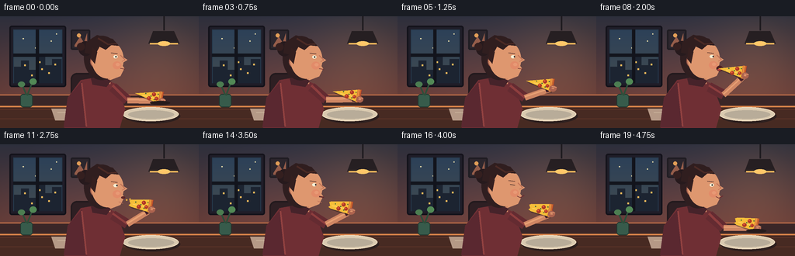
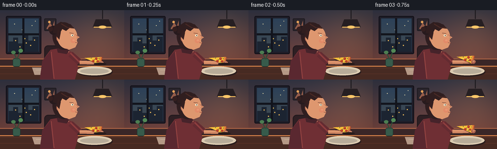
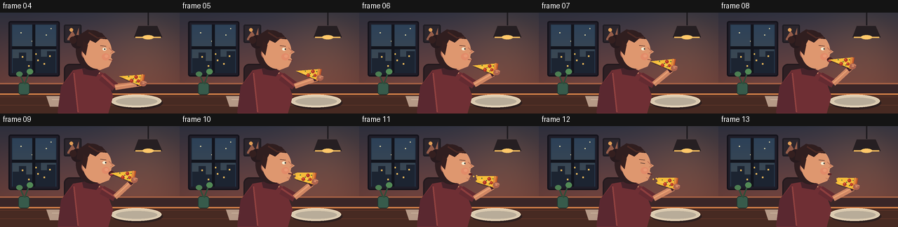

CODING AGENTS AS PIXEL WORLD MODELS
traex/GPT-5.6-Sol · motion_rationality_0009
点击播放 · 原生 RGB 像素
逐轮保存的候选
回放视频、检查图与代码变化。
每份候选均可单独播放。实际图片检查记录在下方工具轨迹中。
候选 01播放与检查图
点击播放 · 原生 RGB 像素


展开代码变化
--- 上一保存版本
+++ 本次保存版本
@@ -0,0 +1,232 @@
+from pathlib import Path
+import math, json
+import numpy as np
+from PIL import Image, ImageDraw, ImageFont, ImageFilter
+import artifact_io
+
+ROOT = Path(__file__).resolve().parent
+SPEC = json.loads((ROOT / 'task_spec.json').read_text())
+W, H, N = SPEC['width'], SPEC['height'], SPEC['frames']
+S = 3
+
+def sc(v): return int(round(v*S))
+def box(b): return tuple(sc(v) for v in b)
+def pts(ps): return [(sc(x),sc(y)) for x,y in ps]
+
+def ease(x):
+ x=max(0,min(1,x)); return x*x*(3-2*x)
+def lerp(a,b,t): return a+(b-a)*t
+
+def ellipse(d, b, fill, outline=None, width=1): d.ellipse(box(b), fill=fill, outline=outline, width=sc(width))
+def rect(d,b,fill,outline=None,width=1): d.rectangle(box(b),fill=fill,outline=outline,width=sc(width))
+def rr(d,b,r,fill,outline=None,width=1): d.rounded_rectangle(box(b),radius=sc(r),fill=fill,outline=outline,width=sc(width))
+def poly(d,p,fill): d.polygon(pts(p),fill=fill)
+def line(d,p,fill,width=1,joint='curve'): d.line(pts(p),fill=fill,width=sc(width),joint=joint)
+
+def background():
+ h,w=H*S,W*S
+ y=np.linspace(0,1,h)[:,None,None]
+ top=np.array([51,53,68],float)[None,None,:]
+ bot=np.array([119,69,62],float)[None,None,:]
+ a=np.clip(y/0.78,0,1)
+ arr=np.tile(top*(1-a)+bot*a,(1,w,1))
+ # warm lamp bloom and soft vignette
+ yy,xx=np.mgrid[0:h,0:w]; X=xx/S; Y=yy/S
+ glow=np.exp(-((X-211)**2/(2*45**2)+(Y-54)**2/(2*50**2)))[...,None]
+ arr=arr*(1-.07*glow)+np.array([255,169,87])[None,None,:]*(.11*glow)
+ vig=np.clip(((X-W/2)/(W*.72))**2+((Y-H/2)/(H*.85))**2,0,.6)[...,None]
+ arr*=1-.19*vig
+ return Image.fromarray(np.uint8(np.clip(arr,0,255)),'RGB')
+
+BG=background()
+
+def draw_room(im):
+ d=ImageDraw.Draw(im)
+ # framed evening window
+ rr(d,(12,12,85,91),3,(31,29,40),(19,18,26),2)
+ rect(d,(17,17,80,86),(39,59,78))
+ # dusk gradient panes
+ for yy in range(18,86):
+ t=(yy-18)/68
+ c=(int(45+21*t),int(65+10*t),int(88-8*t))
+ rect(d,(18,yy,79,yy+1),c)
+ # skyline and lit windows
+ poly(d,[(18,65),(27,65),(27,57),(37,57),(37,69),(46,69),(46,52),(58,52),(58,63),(67,63),(67,55),(79,55),(79,86),(18,86)],(28,36,49))
+ for x,y in [(31,62),(50,58),(53,67),(70,61),(40,75),(62,72)]: rect(d,(x,y,x+2,y+2),(239,185,91))
+ for x,y in [(29,28),(65,31),(45,40),(72,22)]: ellipse(d,(x,y,x+1.5,y+1.5),(231,220,170))
+ rect(d,(46,17,50,86),(18,20,28)); rect(d,(17,48,80,52),(18,20,28))
+ # pendant lamp and glow
+ line(d,[(211,0),(211,18)],(30,27,31),2)
+ poly(d,[(197,19),(224,19),(231,35),(191,35)],(38,31,34))
+ line(d,[(193,35),(229,35)],(246,183,92),2)
+ ellipse(d,(203,32,219,38),(255,199,105))
+ # wall art
+ rr(d,(91,17,116,43),2,(44,38,45),(31,28,34),2)
+ poly(d,[(96,37),(103,26),(108,34),(112,22),(112,39),(96,39)],(149,93,74))
+ ellipse(d,(99,22,104,27),(225,158,87))
+ # wainscot and tabletop
+ rect(d,(0,101,256,116),(58,38,39)); line(d,[(0,101),(256,101)],(166,97,68),2)
+ rect(d,(0,116,256,144),(71,42,34))
+ for y in (120,132): line(d,[(0,y),(256,y)],(92,52,40),1)
+ line(d,[(0,116),(256,116)],(214,130,73),2)
+ # plate and napkin
+ ellipse(d,(160,119,232,138),(45,31,30))
+ ellipse(d,(158,117,230,135),(218,202,176),(244,225,195),1)
+ ellipse(d,(165,121,224,132),(184,172,153))
+ poly(d,[(66,119),(112,119),(116,134),(71,134)],(181,153,134))
+ line(d,[(74,124),(108,124)],(202,177,155),1)
+ # tiny vase on left
+ rr(d,(26,100,42,117),4,(55,91,75),(33,53,46),1)
+ line(d,[(34,101),(28,87)],(46,78,57),2); line(d,[(35,102),(42,84)],(46,78,57),2)
+ ellipse(d,(23,84,32,91),(76,125,81)); ellipse(d,(38,80,47,88),(82,137,86))
+
+def pizza_layer(tip, crust, bitten):
+ layer=Image.new('RGBA',(W*S,H*S),(0,0,0,0)); d=ImageDraw.Draw(layer)
+ tx,ty=tip; cx,cy=crust
+ vx,vy=cx-tx,cy-ty; L=max(1,math.hypot(vx,vy)); ux,uy=vx/L,vy/L; px,py=-uy,ux
+ half=8.3
+ A=(cx+px*half,cy+py*half); B=(cx-px*half,cy-py*half)
+ if not bitten:
+ shape=[tip,A,B]
+ else:
+ # ragged, visibly bitten point
+ shape=[(tx+ux*7+px*1.0,ty+uy*7+py*1.0),
+ (tx+ux*5.1+px*3.2,ty+uy*5.1+py*3.2),
+ (tx+ux*8.1+px*4.8,ty+uy*8.1+py*4.8), A,B,
+ (tx+ux*8.0-px*4.6,ty+uy*8.0-py*4.6),
+ (tx+ux*5.2-px*3.0,ty+uy*5.2-py*3.0)]
+ # drop shadow
+ shadow=[(x+1.3,y+2) for x,y in shape]
+ poly(d,shadow,(30,22,22,95)); poly(d,shape,(246,190,57,255))
+ # sauce rim under crust
+ line(d,[A,B],(176,59,39,255),5)
+ line(d,[A,B],(202,104,48,255),4)
+ line(d,[(A[0]-ux*1,A[1]-uy*1),(B[0]-ux*1,B[1]-uy*1)],(232,145,65,255),2)
+ # melted-cheese highlight streak
+ line(d,[(tx+ux*10+px*1,ty+uy*10+py*1),(cx-ux*7+px*2,cy-uy*7+py*2)],(255,220,111,255),1)
+ # toppings fixed in slice coordinates
+ for frac,off,r in [(0.55,3.2,2.6),(0.72,-3.0,2.5),(0.84,2.0,2.2)]:
+ x=tx+ux*(L*frac)+px*off; y=ty+uy*(L*frac)+py*off
+ ellipse(d,(x-r,y-r,x+r,y+r),(174,54,39,255))
+ ellipse(d,(x-r*.55,y-r*.65,x+r*.15,y+r*.05),(222,93,57,255))
+ # oregano flecks
+ for frac,off in [(0.40,-2),(0.62,0),(0.76,4),(0.88,-4)]:
+ x=tx+ux*(L*frac)+px*off; y=ty+uy*(L*frac)+py*off
+ ellipse(d,(x-.65,y-.65,x+.65,y+.65),(61,102,56,255))
+ return layer
+
+def render_frame(i):
+ im=BG.copy(); draw_room(im); d=ImageDraw.Draw(im)
+ # Timing: lift, bite, chew, lower.
+ if i <= 2: lift=0.0
+ elif i <= 8: lift=ease((i-2)/6)
+ elif i == 9: lift=1.0
+ elif i <= 15: lift=lerp(1.0,.70,ease((i-9)/3)) if i<12 else .70
+ else: lift=lerp(.70,.05,ease((i-15)/4))
+ bitten=i>=10
+ chew = i in (10,11,12,13,14,15)
+ bob = math.sin(i*.7)*.45
+ head_y=bob + (0.7 if chew and i%2 else 0)
+
+ # chair silhouette
+ rr(d,(91,73,126,139),8,(46,31,35),(34,25,29),2)
+ line(d,[(96,121),(93,144)],(35,27,29),4); line(d,[(121,121),(126,144)],(35,27,29),4)
+ # torso / sweater, rich fabric shading
+ poly(d,[(104,82),(127,78),(149,87),(161,119),(154,144),(83,144),(87,105)],(111,47,52))
+ poly(d,[(87,105),(105,84),(112,143),(82,143)],(90,40,48))
+ line(d,[(105,86),(111,142)],(146,66,65),2)
+ # sweater collar and neck
+ rect(d,(126,73+head_y,142,87),(205,137,102))
+ poly(d,[(117,80),(128,76),(143,83),(137,91),(119,88)],(70,35,42))
+
+ # far arm (sleeved upper arm) to elbow
+ shoulder=(145,91); elbow=(164,108-7*lift)
+ line(d,[shoulder,elbow],(100,43,49),13)
+ line(d,[(145,89),elbow],(142,62,62),3)
+
+ # head/hair back
+ ellipse(d,(108,25+head_y,154,82+head_y),(47,30,32))
+ # hair bun
+ ellipse(d,(101,32+head_y,119,51+head_y),(39,26,29)); ellipse(d,(99,34+head_y,109,44+head_y),(52,31,31))
+ # ear behind face
+ ellipse(d,(116,51+head_y,126,65+head_y),(198,126,94),(140,79,67),1)
+ line(d,[(120,55+head_y),(123,58+head_y),(120,61+head_y)],(149,85,70),1)
+ # face profile: oval plus nose and jaw/chin contour
+ ellipse(d,(118,31+head_y,159,80+head_y),(222,151,111))
+ poly(d,[(151,48+head_y),(164,56+head_y),(156,61+head_y),(160,67+head_y),(155,77+head_y),(142,82+head_y),(139,69+head_y)],(222,151,111))
+ # face warm shading / cheek
+ ellipse(d,(145,58+head_y,156,68+head_y),(226,139,105))
+ ellipse(d,(149,60+head_y,154,64+head_y),(232,153,117))
+ # hair cap and lock
+ poly(d,[(109,47+head_y),(111,33+head_y),(125,24+head_y),(145,29+head_y),(153,38+head_y),(143,37+head_y),(136,43+head_y),(128,39+head_y),(122,50+head_y)],(48,30,31))
+ line(d,[(126,28+head_y),(139,36+head_y),(150,35+head_y)],(75,42,37),2)
+ poly(d,[(119,40+head_y),(125,46+head_y),(122,61+head_y),(117,55+head_y)],(53,31,31))
+
+ # eyebrow / eye (blink once during contented chewing)
+ eye_y=51+head_y
+ line(d,[(143,47+head_y),(151,48+head_y)],(78,45,39),1)
+ if i in (12,16):
+ line(d,[(145,52+head_y),(151,53+head_y)],(56,38,37),1)
+ else:
+ ellipse(d,(146,50+head_y,151.5,54+head_y),(245,237,210))
+ # gaze follows pizza
+ pupil_x=149.7 if lift>.45 else 148.2
+ ellipse(d,(pupil_x,51+head_y,pupil_x+1.8,53+head_y),(44,34,34))
+ # nose highlight
+ line(d,[(155,50+head_y),(161,56+head_y),(157,58+head_y)],(190,113,87),1)
+
+ # Mouth states (pizza is overlaid after face)
+ mouth_y=67+head_y
+ if i in (8,9):
+ ellipse(d,(154.5,mouth_y-3,163,mouth_y+4),(75,32,34))
+ ellipse(d,(156,mouth_y+1,161.5,mouth_y+3),(196,74,72))
+ elif chew:
+ if i%2==0:
+ line(d,[(155,mouth_y),(161,mouth_y+1)],(101,45,45),2)
+ else:
+ ellipse(d,(156,mouth_y-1,161,mouth_y+2),(92,39,40))
+ # jaw crease conveys chewing
+ line(d,[(153,73+head_y),(158,75+head_y)],(191,112,88),1)
+ elif i>=16:
+ line(d,[(154,mouth_y),(158,mouth_y+2),(163,mouth_y-1)],(107,43,47),1)
+ else:
+ line(d,[(155,mouth_y),(161,mouth_y+1)],(111,47,47),1)
+
+ # Slice positions
+ low_tip=(174,99); low_crust=(207,105)
+ high_tip=(157.5,67+head_y*.25); high_crust=(190,72+head_y*.25)
+ tip=(lerp(low_tip[0],high_tip[0],lift), lerp(low_tip[1],high_tip[1],lift))
+ crust=(lerp(low_crust[0],high_crust[0],lift), lerp(low_crust[1],high_crust[1],lift))
+ # forearm reaches the crust; skin limb sits behind food
+ hand=(crust[0]+1.0,crust[1]+4.0)
+ line(d,[elbow,hand],(207,134,99),8)
+ line(d,[(elbow[0],elbow[1]-1),(hand[0],hand[1]-1)],(231,160,116),2)
+ # wrist cuff
+ dx,dy=hand[0]-elbow[0],hand[1]-elbow[1]; ll=max(1,math.hypot(dx,dy)); ux,uy=dx/ll,dy/ll
+ cuff=(hand[0]-ux*7,hand[1]-uy*7)
+ line(d,[(cuff[0]-uy*3,cuff[1]+ux*3),(cuff[0]+uy*3,cuff[1]-ux*3)],(73,34,43),4)
+
+ im=Image.alpha_composite(im.convert('RGBA'),pizza_layer(tip,crust,bitten))
+ d=ImageDraw.Draw(im)
+ # grasping fingers atop the crust
+ ellipse(d,(hand[0]-4,hand[1]-3.5,hand[0]+5,hand[1]+4.5),(219,145,105,255),(172,98,78,255),1*S)
+ line(d,[(hand[0]-1,hand[1]-2),(hand[0]+5,hand[1]-1)],(244,173,126,255),1)
+ line(d,[(hand[0]-2,hand[1]+1),(hand[0]+4,hand[1]+2)],(177,103,80,255),1)
+
+ # A couple of tiny crumbs at the completed bite, short-lived and falling naturally.
+ if i in (10,11,12):
+ k=i-10
+ for j,(ox,oy) in enumerate([(0,0),(4,-1)]):
+ x=163+ox+j*.3; y=69+oy+2.2*k+0.6*k*k
+ ellipse(d,(x-1,y-1,x+1,y+1),(238,181,68,255))
+ # sleeve seam and table contact shadow in foreground
+ if i<3 or i>17:
+ ellipse(d,(193,109,219,114),(39,27,27,80))
+ return np.array(im.convert('RGB').resize((W,H),Image.Resampling.LANCZOS),dtype=np.uint8)
+
+def main():
+ frames=np.stack([render_frame(i) for i in range(N)],axis=0)
+ artifact_io.save(frames,ROOT)
+ print('saved',frames.shape,frames.dtype,'range',frames.min(),frames.max())
+
+if __name__=='__main__': main()
可观测工具轨迹
实际执行的命令与返回图片。
命令 1exit 0
/bin/bash -lc "ls -la && printf '\\n--- prompt.txt ---\\n' && cat prompt.txt && printf '\\n--- GENERATION_RULES.md ---\\n' && cat GENERATION_RULES.md && printf '\\n--- task_spec.json ---\\n' && cat task_spec.json"
命令 2exit 0
/bin/bash -lc "find . -maxdepth 2 -type f -printf '%p %s bytes\\n' | sort"
命令 3exit 0
/bin/bash -lc "sed -n '1,260p' artifact_io.py"
命令 4exit 0
/bin/bash -lc "cat > generate.py <<'PY'
from pathlib import Path
import math, json
import numpy as np
from PIL import Image, ImageDraw, ImageFont, ImageFilter
import artifact_io
ROOT = Path(__file__).resolve().parent
SPEC = json.loads((ROOT / 'task_spec.json').read_text())
W, H, N = SPEC['width'], SPEC['height'], SPEC['frames']
S = 3
def sc(v): return int(round(v*S))
def box(b): return tuple(sc(v) for v in b)
def pts(ps): return [(sc(x),sc(y)) for x,y in ps]
def ease(x):
x=max(0,min(1,x)); return x*x*(3-2*x)
def lerp(a,b,t): return a+(b-a)*t
def ellipse(d, b, fill, outline=None, width=1): d.ellipse(box(b), fill=fill, outline=outline, width=sc(width))
def rect(d,b,fill,outline=None,width=1): d.rectangle(box(b),fill=fill,outline=outline,width=sc(width))
def rr(d,b,r,fill,outline=None,width=1): d.rounded_rectangle(box(b),radius=sc(r),fill=fill,outline=outline,width=sc(width))
def poly(d,p,fill): d.polygon(pts(p),fill=fill)
def line(d,p,fill,width=1,joint='curve'): d.line(pts(p),fill=fill,width=sc(width),joint=joint)
def background():
h,w=H*S,W*S
y=np.linspace(0,1,h)[:,None,None]
top=np.array([51,53,68],float)[None,None,:]
bot=np.array([119,69,62],float)[None,None,:]
a=np.clip(y/0.78,0,1)
arr=np.tile(top*(1-a)+bot*a,(1,w,1))
# warm lamp bloom and soft vignette
yy,xx=np.mgrid[0:h,0:w]; X=xx/S; Y=yy/S
glow=np.exp(-((X-211)**2/(2*45**2)+(Y-54)**2/(2*50**2)))[...,None]
arr=arr*(1-.07*glow)+np.array([255,169,87])[None,None,:]*(.11*glow)
vig=np.clip(((X-W/2)/(W*.72))**2+((Y-H/2)/(H*.85))**2,0,.6)[...,None]
arr*=1-.19*vig
return Image.fromarray(np.uint8(np.clip(arr,0,255)),'RGB')
BG=background()
def draw_room(im):
d=ImageDraw.Draw(im)
# framed evening window
rr(d,(12,12,85,91),3,(31,29,40),(19,18,26),2)
rect(d,(17,17,80,86),(39,59,78))
# dusk gradient panes
for yy in range(18,86):
t=(yy-18)/68
c=(int(45+21*t),int(65+10*t),int(88-8*t))
rect(d,(18,yy,79,yy+1),c)
# skyline and lit windows
poly(d,[(18,65),(27,65),(27,57),(37,57),(37,69),(46,69),(46,52),(58,52),(58,63),(67,63),(67,55),(79,55),(79,86),(18,86)],(28,36,49))
for x,y in [(31,62),(50,58),(53,67),(70,61),(40,75),(62,72)]: rect(d,(x,y,x+2,y+2),(239,185,91))
for x,y in [(29,28),(65,31),(45,40),(72,22)]: ellipse(d,(x,y,x+1.5,y+1.5),(231,220,170))
rect(d,(46,17,50,86),(18,20,28)); rect(d,(17,48,80,52),(18,20,28))
# pendant lamp and glow
line(d,[(211,0),(211,18)],(30,27,31),2)
poly(d,[(197,19),(224,19),(231,35),(191,35)],(38,31,34))
line(d,[(193,35),(229,35)],(246,183,92),2)
ellipse(d,(203,32,219,38),(255,199,105))
# wall art
rr(d,(91,17,116,43),2,(44,38,45),(31,28,34),2)
poly(d,[(96,37),(103,26),(108,34),(112,22),(112,39),(96,39)],(149,93,74))
ellipse(d,(99,22,104,27),(225,158,87))
# wainscot and tabletop
rect(d,(0,101,256,116),(58,38,39)); line(d,[(0,101),(256,101)],(166,97,68),2)
rect(d,(0,116,256,144),(71,42,34))
for y in (120,132): line(d,[(0,y),(256,y)],(92,52,40),1)
line(d,[(0,116),(256,116)],(214,130,73),2)
# plate and napkin
ellipse(d,(160,119,232,138),(45,31,30))
ellipse(d,(158,117,230,135),(218,202,176),(244,225,195),1)
ellipse(d,(165,121,224,132),(184,172,153))
poly(d,[(66,119),(112,119),(116,134),(71,134)],(181,153,134))
line(d,[(74,124),(108,124)],(202,177,155),1)
# tiny vase on left
rr(d,(26,100,42,117),4,(55,91,75),(33,53,46),1)
line(d,[(34,101),(28,87)],(46,78,57),2); line(d,[(35,102),(42,84)],(46,78,57),2)
ellipse(d,(23,84,32,91),(76,125,81)); ellipse(d,(38,80,47,88),(82,137,86))
def pizza_layer(tip, crust, bitten):
layer=Image.new('RGBA',(W*S,H*S),(0,0,0,0)); d=ImageDraw.Draw(layer)
tx,ty=tip; cx,cy=crust
vx,vy=cx-tx,cy-ty; L=max(1,math.hypot(vx,vy)); ux,uy=vx/L,vy/L; px,py=-uy,ux
half=8.3
A=(cx+px*half,cy+py*half); B=(cx-px*half,cy-py*half)
if not bitten:
shape=[tip,A,B]
else:
# ragged, visibly bitten point
shape=[(tx+ux*7+px*1.0,ty+uy*7+py*1.0),
(tx+ux*5.1+px*3.2,ty+uy*5.1+py*3.2),
(tx+ux*8.1+px*4.8,ty+uy*8.1+py*4.8), A,B,
(tx+ux*8.0-px*4.6,ty+uy*8.0-py*4.6),
(tx+ux*5.2-px*3.0,ty+uy*5.2-py*3.0)]
# drop shadow
shadow=[(x+1.3,y+2) for x,y in shape]
poly(d,shadow,(30,22,22,95)); poly(d,shape,(246,190,57,255))
# sauce rim under crust
line(d,[A,B],(176,59,39,255),5)
line(d,[A,B],(202,104,48,255),4)
line(d,[(A[0]-ux*1,A[1]-uy*1),(B[0]-ux*1,B[1]-uy*1)],(232,145,65,255),2)
# melted-cheese highlight streak
line(d,[(tx+ux*10+px*1,ty+uy*10+py*1),(cx-ux*7+px*2,cy-uy*7+py*2)],(255,220,111,255),1)
# toppings fixed in slice coordinates
for frac,off,r in [(0.55,3.2,2.6),(0.72,-3.0,2.5),(0.84,2.0,2.2)]:
x=tx+ux*(L*frac)+px*off; y=ty+uy*(L*frac)+py*off
ellipse(d,(x-r,y-r,x+r,y+r),(174,54,39,255))
ellipse(d,(x-r*.55,y-r*.65,x+r*.15,y+r*.05),(222,93,57,255))
# oregano flecks
for frac,off in [(0.40,-2),(0.62,0),(0.76,4),(0.88,-4)]:
x=tx+ux*(L*frac)+px*off; y=ty+uy*(L*frac)+py*off
ellipse(d,(x-.65,y-.65,x+.65,y+.65),(61,102,56,255))
return layer
def render_frame(i):
im=BG.copy(); draw_room(im); d=ImageDraw.Draw(im)
# Timing: lift, bite, chew, lower.
if i <= 2: lift=0.0
elif i <= 8: lift=ease((i-2)/6)
elif i == 9: lift=1.0
elif i <= 15: lift=lerp(1.0,.70,ease((i-9)/3)) if i<12 else .70
else: lift=lerp(.70,.05,ease((i-15)/4))
bitten=i>=10
chew = i in (10,11,12,13,14,15)
bob = math.sin(i*.7)*.45
head_y=bob + (0.7 if chew and i%2 else 0)
# chair silhouette
rr(d,(91,73,126,139),8,(46,31,35),(34,25,29),2)
line(d,[(96,121),(93,144)],(35,27,29),4); line(d,[(121,121),(126,144)],(35,27,29),4)
# torso / sweater, rich fabric shading
poly(d,[(104,82),(127,78),(149,87),(161,119),(154,144),(83,144),(87,105)],(111,47,52))
poly(d,[(87,105),(105,84),(112,143),(82,143)],(90,40,48))
line(d,[(105,86),(111,142)],(146,66,65),2)
# sweater collar and neck
rect(d,(126,73+head_y,142,87),(205,137,102))
poly(d,[(117,80),(128,76),(143,83),(137,91),(119,88)],(70,35,42))
# far arm (sleeved upper arm) to elbow
shoulder=(145,91); elbow=(164,108-7*lift)
line(d,[shoulder,elbow],(100,43,49),13)
line(d,[(145,89),elbow],(142,62,62),3)
# head/hair back
ellipse(d,(108,25+head_y,154,82+head_y),(47,30,32))
# hair bun
ellipse(d,(101,32+head_y,119,51+head_y),(39,26,29)); ellipse(d,(99,34+head_y,109,44+head_y),(52,31,31))
# ear behind face
ellipse(d,(116,51+head_y,126,65+head_y),(198,126,94),(140,79,67),1)
line(d,[(120,55+head_y),(123,58+head_y),(120,61+head_y)],(149,85,70),1)
# face profile: oval plus nose and jaw/chin contour
ellipse(d,(118,31+head_y,159,80+head_y),(222,151,111))
poly(d,[(151,48+head_y),(164,56+head_y),(156,61+head_y),(160,67+head_y),(155,77+head_y),(142,82+head_y),(139,69+head_y)],(222,151,111))
# face warm shading / cheek
ellipse(d,(145,58+head_y,156,68+head_y),(226,139,105))
ellipse(d,(149,60+head_y,154,64+head_y),(232,153,117))
# hair cap and lock
poly(d,[(109,47+head_y),(111,33+head_y),(125,24+head_y),(145,29+head_y),(153,38+head_y),(143,37+head_y),(136,43+head_y),(128,39+head_y),(122,50+head_y)],(48,30,31))
line(d,[(126,28+head_y),(139,36+head_y),(150,35+head_y)],(75,42,37),2)
poly(d,[(119,40+head_y),(125,46+head_y),(122,61+head_y),(117,55+head_y)],(53,31,31))
# eyebrow / eye (blink once during contented chewing)
eye_y=51+head_y
line(d,[(143,47+head_y),(151,48+head_y)],(78,45,39),1)
if i in (12,16):
line(d,[(145,52+head_y),(151,53+head_y)],(56,38,37),1)
else:
ellipse(d,(146,50+head_y,151.5,54+head_y),(245,237,210))
# gaze follows pizza
pupil_x=149.7 if lift>.45 else 148.2
ellipse(d,(pupil_x,51+head_y,pupil_x+1.8,53+head_y),(44,34,34))
# nose highlight
line(d,[(155,50+head_y),(161,56+head_y),(157,58+head_y)],(190,113,87),1)
# Mouth states (pizza is overlaid after face)
mouth_y=67+head_y
if i in (8,9):
ellipse(d,(154.5,mouth_y-3,163,mouth_y+4),(75,32,34))
ellipse(d,(156,mouth_y+1,161.5,mouth_y+3),(196,74,72))
elif chew:
if i%2==0:
line(d,[(155,mouth_y),(161,mouth_y+1)],(101,45,45),2)
else:
ellipse(d,(156,mouth_y-1,161,mouth_y+2),(92,39,40))
# jaw crease conveys chewing
line(d,[(153,73+head_y),(158,75+head_y)],(191,112,88),1)
elif i>=16:
line(d,[(154,mouth_y),(158,mouth_y+2),(163,mouth_y-1)],(107,43,47),1)
else:
line(d,[(155,mouth_y),(161,mouth_y+1)],(111,47,47),1)
# Slice positions
low_tip=(174,99); low_crust=(207,105)
high_tip=(157.5,67+head_y*.25); high_crust=(190,72+head_y*.25)
tip=(lerp(low_tip[0],high_tip[0],lift), lerp(low_tip[1],high_tip[1],lift))
crust=(lerp(low_crust[0],high_crust[0],lift), lerp(low_crust[1],high_crust[1],lift))
# forearm reaches the crust; skin limb sits behind food
hand=(crust[0]+1.0,crust[1]+4.0)
line(d,[elbow,hand],(207,134,99),8)
line(d,[(elbow[0],elbow[1]-1),(hand[0],hand[1]-1)],(231,160,116),2)
# wrist cuff
dx,dy=hand[0]-elbow[0],hand[1]-elbow[1]; ll=max(1,math.hypot(dx,dy)); ux,uy=dx/ll,dy/ll
cuff=(hand[0]-ux*7,hand[1]-uy*7)
line(d,[(cuff[0]-uy*3,cuff[1]+ux*3),(cuff[0]+uy*3,cuff[1]-ux*3)],(73,34,43),4)
im=Image.alpha_composite(im.convert('RGBA'),pizza_layer(tip,crust,bitten))
d=ImageDraw.Draw(im)
# grasping fingers atop the crust
ellipse(d,(hand[0]-4,hand[1]-3.5,hand[0]+5,hand[1]+4.5),(219,145,105,255),(172,98,78,255),1*S)
line(d,[(hand[0]-1,hand[1]-2),(hand[0]+5,hand[1]-1)],(244,173,126,255),1)
line(d,[(hand[0]-2,hand[1]+1),(hand[0]+4,hand[1]+2)],(177,103,80,255),1)
# A couple of tiny crumbs at the completed bite, short-lived and falling naturally.
if i in (10,11,12):
k=i-10
for j,(ox,oy) in enumerate([(0,0),(4,-1)]):
x=163+ox+j*.3; y=69+oy+2.2*k+0.6*k*k
ellipse(d,(x-1,y-1,x+1,y+1),(238,181,68,255))
# sleeve seam and table contact shadow in foreground
if i<3 or i>17:
ellipse(d,(193,109,219,114),(39,27,27,80))
return np.array(im.convert('RGB').resize((W,H),Image.Resampling.LANCZOS),dtype=np.uint8)
def main():
frames=np.stack([render_frame(i) for i in range(N)],axis=0)
artifact_io.save(frames,ROOT)
print('saved',frames.shape,frames.dtype,'range',frames.min(),frames.max())
if __name__=='__main__': main()
PY
python generate.py
ls -lh pixels.npz index.html inspection.png frames/00.png frames/19.png"命令 5exit 0
/bin/bash -lc "python - <<'PY'
from PIL import Image,ImageDraw
from pathlib import Path
p=Path('.')
ids=list(range(4,14))
w,h=256,144
out=Image.new('RGB',(w*5,(h+18)*2),(20,20,20))
d=ImageDraw.Draw(out)
for k,i in enumerate(ids):
x=(k%5)*w;y=(k//5)*(h+18)
d.text((x+4,y+2),f'frame {i:02d}',fill='white')
out.paste(Image.open(p/'frames'/f'{i:02d}.png'),(x,y+18))
out.save('.tmp/bite_sequence.png')
PY
python - <<'PY'
import numpy as np
from pathlib import Path
x=np.load('pixels.npz')['pixels']
print('packed tensor',x.shape,x.dtype)
# exact frame-to-frame change percentages
f=np.transpose(x,(2,0,1))
for i in range(1,len(f)):
print(f'{i-1:02d}->{i:02d}: {(f[i]"'!=f[i-1]).mean()*100:5.2f}%'"')
PY"视觉工具实际返回图片 1

视觉工具实际返回图片 2

保存候选 1 份；完成命令 5 次；可验证图片返回 2 张。原始 API 响应与完整日志保留在本地。